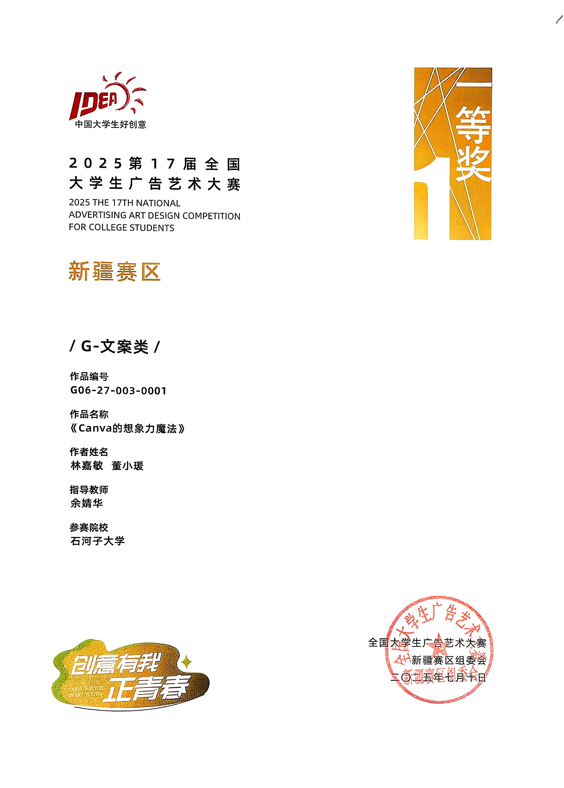
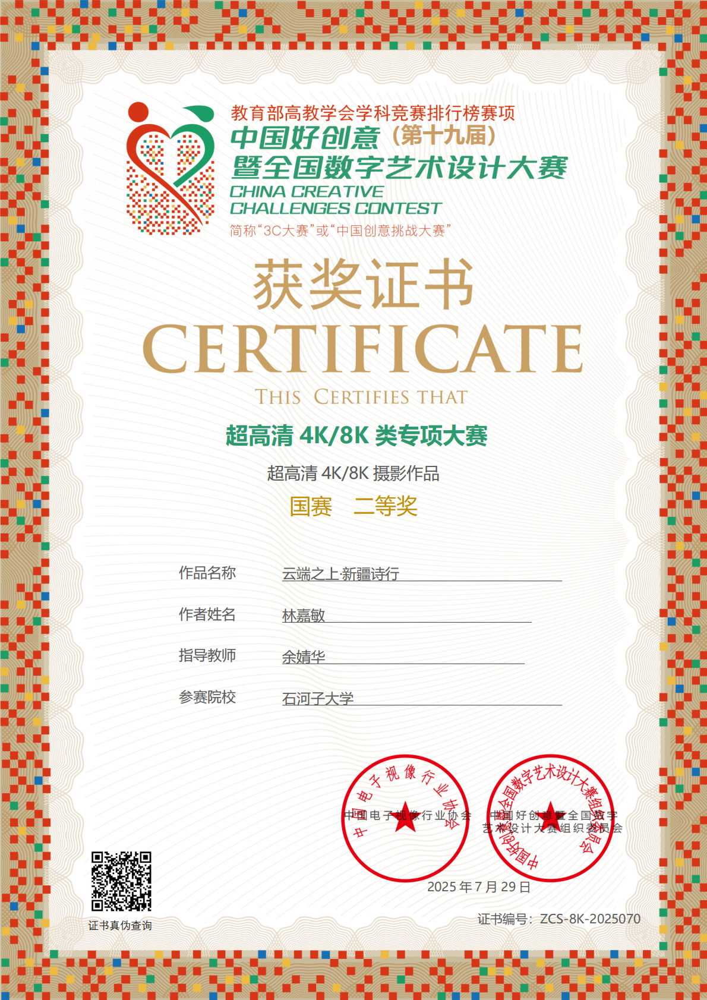
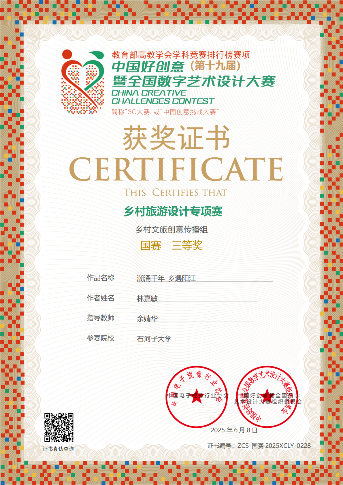
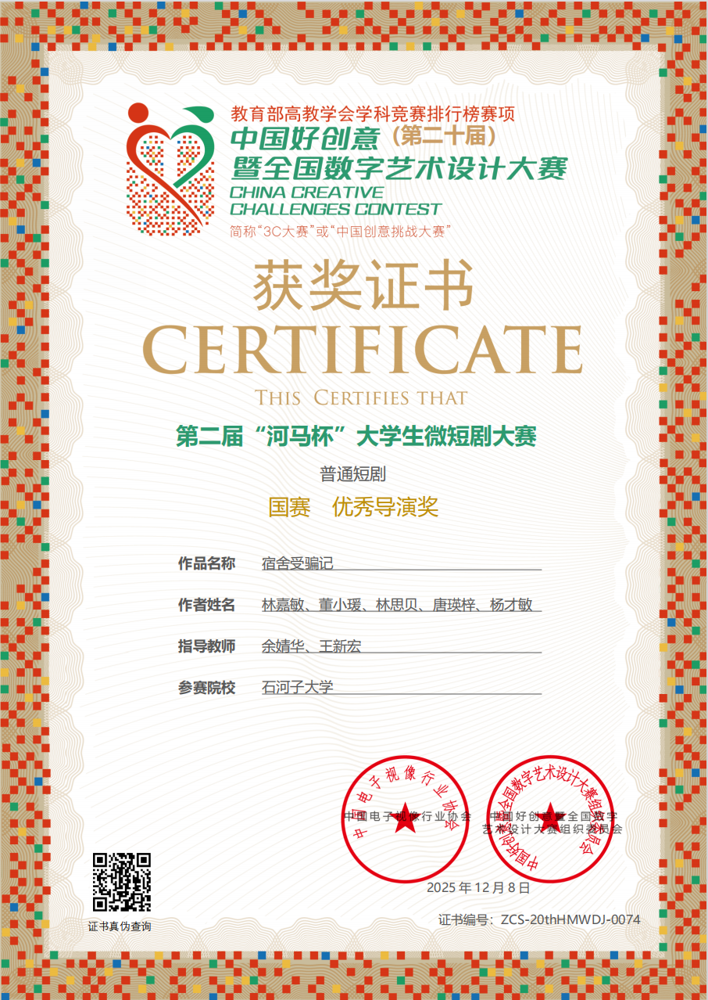
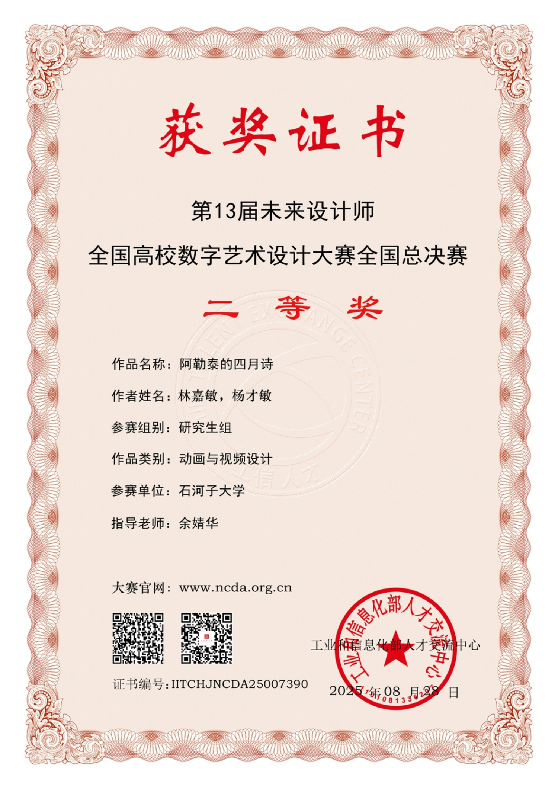

Status: ✅ 正在寻找产品运营 / 内容创作实习机会
你好，我是林嘉敏。
当记者的第三年，我花三个月一战跨考上岸211新传研究生，目前是石河子大学新闻与传播专业研二学生。 我相信生命是一棵长满可能的树，而人可以无限进步。
职业轨迹：跨界探索
做内容？做运营？做产品？ 三年的新媒体记者生涯，我习惯了扛着相机拿着笔，穿梭在城市街头，用镜头和文字捕捉那些真实动人的瞬间。 为了看得更远、更深，我选择攻读新闻传播研究生，在学术中沉淀思考。 而在特斯拉的实习，则让我从感性的叙事中跳脱出来，尝试用理性的逻辑去拆解需求、驱动增长。
对我而言，无论是讲故事还是做商业落地，核心始终如一：去了解屏幕后那个真实的人。 而好奇心与洞察力，是打开无数与此相关之门的钥匙。
未来愿景与个人探索
在未来的职业规划上，视频内容创作与产品运营是我非常向往的两个方向。 我既希望能继续用镜头和创意打造优质的影像内容，也希望把做内容培养出的同理心，转化为驱动业务增长的运营策略。
工作之外，我热衷于影像创作与前沿技术的探索。曾策划非遗纪录片《一脉火龙》，利用AI制作了客家乡愁动画短片《月光光》； 也在无数夜晚中，沉浸vibecoding不能自拔，一步步跑通ai工作流，利用ai进行数据分析，创作小工具，为工作提效。
商业拓展 / 活动统筹 / 品牌合作
新闻报道 / 深度访谈 / 视觉叙事
新媒体与传播专业（2027届）






